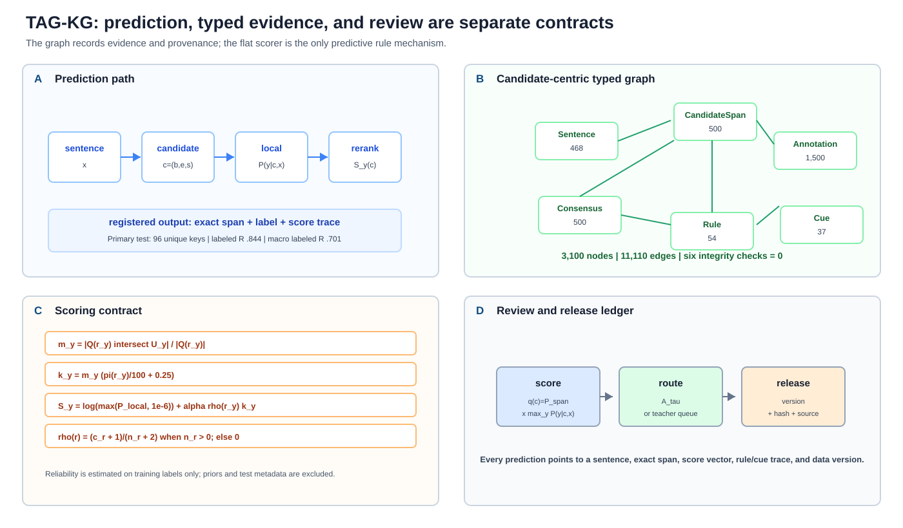
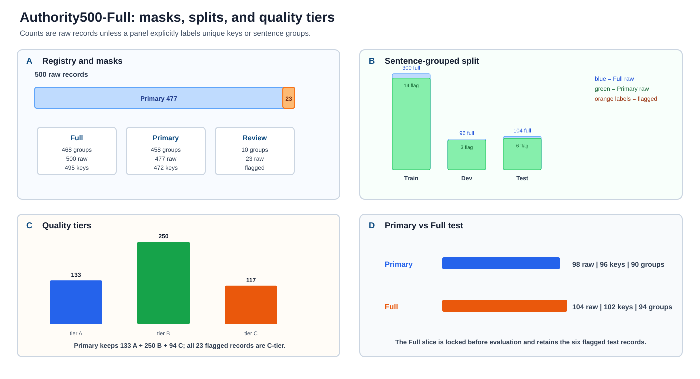
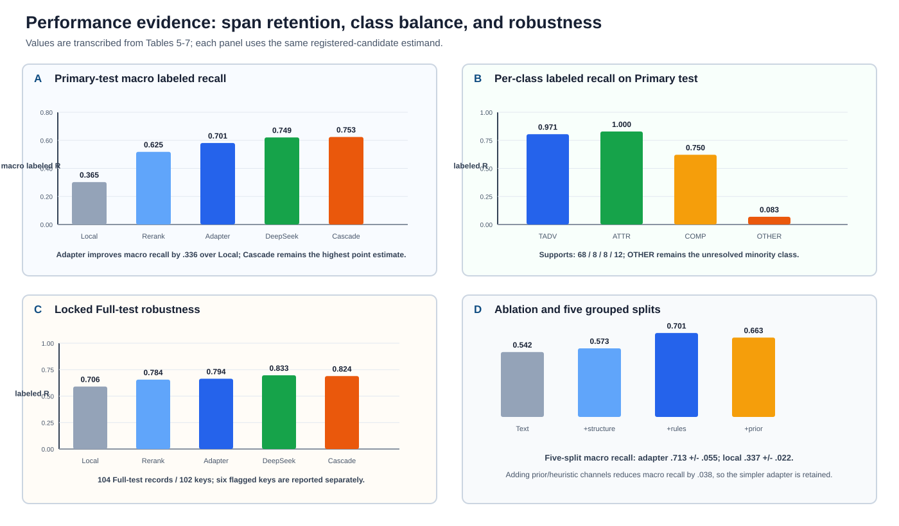
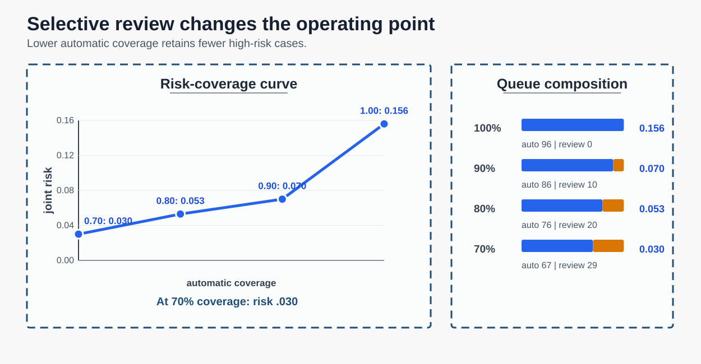
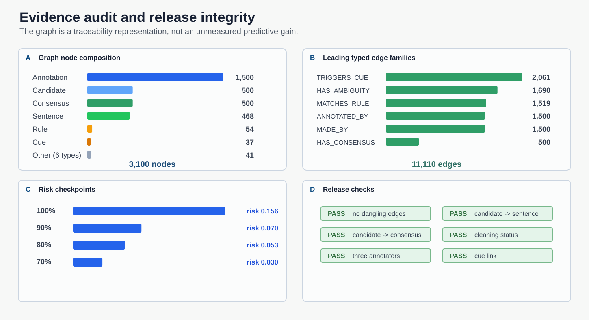

Tingrui You (1); Na Zhang (2); Ling Xiong (2); Jaimei Li (2, corresponding)
(1) Hainan International College, Beijing Language and Culture University, China
(2) School of Information Science, Beijing Language and Culture University, Beijing, China
Corresponding author: Ljm@blcu.edu.cn
Contributing authors: yyting2006@163.com; zn17333099816@163.com; lingdonghua99@163.com
Selecting Chinese examples for teaching temporal adverbials requires grammatical-function diagnosis rather than temporal-expression detection alone. The same surface form can be an event modifier, an attributive, a duration complement, a comparison standard, or a discourse frame. We present TAG-KG, an evidence architecture that combines a frozen, label-conditioned rule scorer with a candidate-centric knowledge graph and a selective teacher-review path. The scorer reranks a lightweight local classifier; the graph stores sentences, candidate spans, individual annotations, consensus labels, diagnostic cues, grammar rules, cleaning status, and authority provenance for retrieval and audit. We treat the data as a candidate registry rather than an exhaustively annotated open-span corpus. Authority500-Full contains 468 sentence groups and all 500 original candidate records. The 477 consistency-marked records form the Primary collection, while 23 provisional records remain visible for robustness and review. The independently rebuilt graph contains 3,100 nodes and 11,110 edges, including 54 rules and 37 cues, and passes six structural-integrity checks. Its 86.4% rule agreement is explicitly a post-development construction-set audit rather than held-out accuracy. Confirmatory evaluation uses 98 Primary-test records and 96 unique registered keys; locked robustness uses 104 Full-test records and 102 keys, including six flagged records. On the fixed Primary test, the flat rule/cue adapter raises registered labeled recall from .750 to .844 and macro labeled recall from .365 to .701. The paired macro-recall gain is .336 with a 95% group-bootstrap confidence interval of [.217, .446]. A historical, test-gold-free TAG-KG/DeepSeek cascade reaches .875/.753 for labeled and macro labeled recall, while the lowest-score 30% routing policy lowers retained joint risk from .156 to .030. The article separates predictive evidence, construction auditing, and teacher review, and makes the claim scope explicit: the results support an internally held-out in-domain finding and a reproducible evidence workflow, not open-span generalization, universal grammatical truth, or measured teacher time savings.
Keywords: Chinese language education; temporal expressions; grammatical-function diagnosis; knowledge graphs; selective prediction
Temporal expressions are easy to notice but difficult to curate as pedagogical examples. In "昨天我去了学校" ("Yesterday I went to school"), "昨天" modifies an event and is a temporal adverbial. In "昨天的会议很重要" ("Yesterday's meeting was important"), the same surface string modifies a noun phrase. In "我学了三年中文" ("I studied Chinese for three years"), "三年" follows the predicate and functions as a duration complement. A system that treats every time-denoting phrase as a temporal adverbial can therefore supply teachers with examples that are fluent but grammatically misleading for the target teaching point.
This problem lies between established tasks. TimeML and TIMEX3 formalize temporal expressions and relations (Pustejovsky et al., 2003). SUTime and HeidelTime identify and normalize time mentions (Chang and Manning, 2012; Strötgen and Gertz, 2013), and Chinese HeidelTime extends temporal tagging to Chinese (Li et al., 2014). Treebanks and dependency parsers encode syntactic structure (Xue et al., 2005; Nivre et al., 2016), but a parser label is not itself a decision about whether an example is pedagogically suitable for a target grammar point. We study the intervening problem as temporal-function diagnosis: given a sentence and a temporal candidate, determine whether the candidate is an adverbial, an attributive modifier, a complement, or another temporal use.
Large language models make the task scientifically interesting because they can be strong predictors and can produce fluent grammatical reasons. A useful comparison is therefore between evidence regimes rather than between "rules that explain" and "models that cannot explain." A generated rationale can be plausible without being the information that caused the prediction, and its wording or cited cues can change across calls. A stored decision path has a narrower but operationally important advantage: the exact candidate, score components, rule version, matched cues, annotation state, and source links can be retrieved after the decision without reconstructing them from prose.
TAG-KG is designed around this separation. Its predictive component is a flat, label-conditioned rule-evidence scorer combined with a local model. Its graph component is a typed representation for provenance, query, and audit; graph topology is not presented as an unmeasured relational-model gain. This distinction prevents graph size from being mistaken for predictive evidence. It also permits a construction-set rule audit without reporting that audit as held-out performance.
The study addresses three research questions:
The journal article makes five contributions. First, it defines a four-label Chinese temporal-function diagnosis task and retains the complete 500-record working collection. Second, it keeps 477 consistency-marked records for the primary protocol while treating all 500 records as an explicit robustness and review collection, so no original observation disappears. Third, it recovers and independently rebuilds the complete candidate-centric graph, establishing its scale and integrity. Fourth, it separates flat rule scoring, graph representation, construction-set rule audit, and selective review, with a train/development/test protocol that excludes the synthetic GOLD_INJECTED field from all predictors and reliability estimates. Fifth, it introduces a claim-evidence ledger that links each numerical claim to versioned predictions, hashes, and executable checks.
The article is a journal-length extension of the previously withdrawn CAIT 2026 submission (Paper CT3001). The withdrawal was requested before registration and publication, and the paper was not included in the proceedings; the withdrawal letter is retained in the submission records. The extension is substantive in four ways: it formalizes the Primary versus Full estimands; replaces a single overloaded accuracy column with registered-span, conditional, and end-to-end labeled metrics; adds locked robustness, grouped stability, risk-coverage, and repeated LLM explanation audits; and documents the provenance and release boundaries needed for a teacher-facing research artifact. These additions sharpen the estimand and the limitations rather than enlarging the claim beyond the available data.

Temporal information extraction identifies dates, durations, clock times, recurring expressions, events, and temporal relations. TimeML supplies a general annotation language (Pustejovsky et al., 2003). SUTime uses deterministic token patterns for recognition and normalization (Chang and Manning, 2012), while HeidelTime supports multilingual and cross-domain tagging (Strötgen and Gertz, 2013), including Chinese (Li et al., 2014). Transformer-based temporal taggers extend this line (Almasian et al., 2021; Su et al., 2025). These systems are natural span baselines for TAG-KG, but they do not directly distinguish temporal adverbials from nominal modifiers, complements, comparison standards, or temporal subjects.
Chinese syntactic resources supply complementary structure. The Penn Chinese Treebank defines phrase structure (Xue et al., 2005), Chinese PropBank adds predicate-argument annotation (Xue and Palmer, 2003; Xue, 2008), and dependency resources represent relations such as nominal modification and temporal obliques (Liu and Huang, 2006; Nivre et al., 2016). Stanza, N-LTP, and HanLP operationalize such analyses (Qi et al., 2020; Che et al., 2021; He, 2024). In this study they are evidence providers and transparent task adapters rather than native four-label temporal-function systems. This distinction matters because a temporal dependency or phrase label can be compatible with several pedagogical functions.
Chinese grammar references distinguish adverbials, attributives, complements, and other temporal terms in different syntactic environments (Lü, 1999; Huang and Liao, 2017; Liu et al., 2001). The Chinese Proficiency Grading Standards for International Chinese Language Education provide an educational framing for grammar categories and proficiency progression (Ministry of Education of the People's Republic of China and State Language Commission, 2021). Educational NLP has studied sentence readability and automatic example selection for language-learning exercises (Pilán et al., 2013, 2014; Benedetti et al., 2024). Chinese grammatical-error diagnosis likewise shows the importance of task-specific labels in language learning (Yu et al., 2014).
TAG-KG targets a different object. The input is a candidate example selected from authoritative or pedagogical materials, not a learner utterance to be corrected. The output is a function diagnosis and an evidence record. The intended decision is whether a candidate is suitable for a stated grammatical purpose and whether a teacher should inspect it, not whether a learner has violated a universal grammar rule.
LLMs have been evaluated for temporal relation extraction and temporal reasoning (Yuan et al., 2023; Xiong et al., 2024; Wang and Zhao, 2024; Yuan et al., 2024). Their ability to follow a rule inventory does not by itself establish explanation faithfulness. Work on faithful interpretation distinguishes evidence aligned with a decision process from plausible post-hoc text (Jacovi and Goldberg, 2020), and ERASER separates rationale plausibility from faithfulness (DeYoung et al., 2020). Sampling-based consistency can reveal unsupported generations (Manakul et al., 2023), while semantic entropy shows that lexical stability and semantic uncertainty are not equivalent (Farquhar et al., 2024).
Our audit therefore separates valid rule citation, sentence-grounded cues, stable evidence selection, stable path, and stable wording. The stricter measures are intentionally not collapsed into a single explanation score. This makes a deterministic stored path and a generated rationale comparable at the level of the property each actually claims.
Selective classification trades coverage for lower risk by allowing a model to abstain (El-Yaniv and Wiener, 2010). Calibration is necessary when a score is used operationally (Guo et al., 2017). TAG-KG applies this idea to teacher review: low-support or conflicting candidates are routed rather than silently accepted. For reproducibility, data statements and datasheets recommend explicit documentation of composition, provenance, intended use, and release constraints (Bender and Friedman, 2018; Gebru et al., 2021). Leakage audits are especially important in small-data machine learning, where decisions made using the complete collection can inflate apparent generalization (Kapoor and Narayanan, 2023). These principles motivate the separation between the 500-record construction audit and the held-out predictive experiments.
Given a sentence x and a temporal candidate c=(b,e,s), where b and e are character offsets and s is the surface string, the system predicts:
TADV modifies an event or predicate as a temporal adverbial. ATTR modifies a noun, frequently through "的". COMP follows or is selected by a predicate and expresses duration, endpoint, result time, or scheduled time. OTHER covers comparison standards, temporal subjects or topics, discourse frames, malformed boundaries, and unsupported cases. Table 1 illustrates the central contrast.
| Sentence | Candidate | Label | Diagnostic role |
|---|---|---|---|
| 昨天我去了学校。 | 昨天 | TADV | event-relative time before the predicate |
| 昨天的会议很重要。 | 昨天 | ATTR | nominal modification through 的 |
| 我学了三年中文。 | 三年 | COMP | post-verbal duration complement |
| 时间过得很快。 | 时间 | OTHER | temporal noun without target adverbial function |
Table 1. Temporal candidates with different grammatical functions. The examples are used to define the task contrast; they are not treated as evidence of performance. Source: task definition in the CAIT full-author manuscript.
The task is candidate-conditioned. A registered candidate is an observed text span supplied by the working collection. The collection does not exhaustively annotate every possible temporal string in every sentence. Consequently, an unmatched generated span is logged for adjudication but is not automatically treated as a false positive.
Authority500-Full contains 468 sentence groups and 500 raw candidate records. After boundary correction, five record pairs collapse into duplicate exact sentence-span keys, leaving 495 unique keys for Full span evaluation. The raw label distribution is 335 TADV, 43 ATTR, 45 COMP, and 77 OTHER. Every candidate retains an ID and provenance row even when two rows resolve to the same exact key.
The cleaning record marks 477 candidates as consistent for the primary protocol and 23 candidates as provisional review or exclusion records. We do not delete the latter. Primary fitting and scoring use the 477-record registry with 472 unique keys; the locked Full test uses the 500-record registry and reports the flagged slice separately. The 477 records contain 331 TADV, 39 ATTR, 44 COMP, and 63 OTHER examples. The 23 flagged records contain four TADV, four ATTR, one COMP, and 14 OTHER cases, making them a deliberately difficult, non-target-heavy slice.
Splitting is by sentence group rather than candidate ID. Five same-label candidate-ID pairs share an identical registered (sid,b,e,s) key after boundary correction. All 500 IDs remain for provenance; metrics use 495 Full keys or 472 Primary keys to avoid double counting. The fixed Primary test contains 98 records, 96 keys, and 90 groups. Locked Full-test robustness contains 104 records, 102 keys, and 94 groups, including six flagged records. "Full-500" names the retained source collection and protocol; it does not imply that train or development instances enter held-out performance.
Thirteen groups mix Primary and flagged candidates: nine in training, two in development, and two in test. Ten groups contain only flagged candidates: five in training, one in development, and four in test. The complete sentence remains available as context, but supervision and scoring join by candidate ID. Flagged exact keys and unregistered text regions are unknown or ignore states, never negative O labels.
| Split | Full groups | Full raw | Full keys | Primary groups | Primary raw | Primary keys | Flagged raw |
|---|---|---|---|---|---|---|---|
| Train | 280 | 300 | 297 | 275 | 286 | 283 | 14 |
| Development | 94 | 96 | 96 | 93 | 93 | 93 | 3 |
| Test | 94 | 104 | 102 | 90 | 98 | 96 | 6 |
| All | 468 | 500 | 495 | 458 | 477 | 472 | 23 |
Table 2. Sentence-grouped partition and evaluation collections. Source: Authority500-Full split table in the CAIT full-author manuscript.

Three raters judged candidate boundary acceptability, temporal-adverbial status, and finer function or problem type. Fleiss' agreement is highest for temporal-adverbial status, with kappa 0.727, followed by function or problem type, with kappa 0.628, and boundary correctness, with kappa 0.418. The corresponding unanimous-agreement rates are 0.812, 0.704, and 0.796. Lower boundary agreement is substantively meaningful: deciding whether an event-relative anchor belongs inside a phrase can be harder than deciding the function of the corrected phrase.
Annotators could propose a corrected span. A correction was adopted only when the vote was not tied and the proposed text could be located in the source sentence. Tied, uncertain, or unlocatable cases were retained for review. Full-500 has 133 A-tier, 250 B-tier, and 117 C-tier records. Primary-477 has 133, 250, and 94, because all 23 flagged records are C-tier. Primary-test supports are 31, 48, and 19 raw records, or 31, 48, and 17 keys. Full-test has 31, 48, and 25 records, or 31, 48, and 23 keys. Tier, status, and paper-position notes are auditor-only metadata; they are never predictor features, reliability inputs, or threshold-selection variables.
The collection represents written Mandarin examples selected for grammatical diagnosis in Chinese-as-a-second-language material preparation. It is not a balanced sample of contemporary Chinese, spoken interaction, learner production, dialects, or demographic groups, and no claim is made beyond the represented sources. Candidate labels encode a project-specific pedagogical decision, not a universal theory of Chinese syntax.
Source records distinguish official standards, teaching manuals, reference grammars, and project-maintained guidelines. The public release provides rights-cleared Authority500-Full sentence records and a de-identified adjudication table with stable IDs, candidate spans, labels, consensus/status fields, and provenance metadata. The intended use is decision support for corpus curation and teacher review. It is not automated assessment of students or teachers.
TAG-KG has three connected but distinct layers: prediction, evidence representation, and review. A local model produces candidate and function probabilities. A frozen flat scorer retrieves label-conditioned rule evidence and can rerank the function distribution. The graph stores the candidate's annotation, rule, cue, quality, and authority links. An LLM may be used as a second opinion, but its prose is not written back as verified evidence without validation.
The complete graph is an audit view rather than the predictor's inference view. Static rules, cue definitions, and the authority-source ontology may be visible across splits, but the target candidate's function, consensus, status, tier, paper-position notes, and all label-bearing instance edges are hidden for every prediction. Only Primary-train labels supervise the local model and aggregate rule reliability. Development and test labels are accessible only to evaluation code.
A recall-oriented generator combines temporal lexicons, ordered regular expressions, priority-based overlap suppression, and boundary variants for time nouns, dates, clock times, frequency adverbs, durations, and event-relative frames. The generator is designed to make a registered candidate reachable when its surface form is compatible with the frozen inventory. It is not presented as a complete open-span temporal recognizer.
The local baseline uses character 2-5-gram TF-IDF features with class-balanced one-vs-rest logistic regression. Span features concatenate the surface form, up to 12 characters of left and right context, coarse position, ordinary generator cues, and the sentence. Function features concatenate the span, sentence, and up to 16 characters on either side. The upgraded adapter combines a text probability channel with a logistic channel trained on flat rule and cue features. Development selection chooses channel weights and label bias, with no graph embedding and no encoder fine-tuning.
The final protocol forbids GOLD_INJECTED from every feature vector, cue set, rule-reliability estimate, and evaluation record. Candidate-level fitting uses only 286 Primary-train records representing 283 registered keys. Fourteen flagged train records have zero loss and zero rule-statistics weight even inside mixed-status sentences. A registered candidate that the frozen inference-time generator cannot emit remains a recall miss. Unregistered sentence regions are unknown rather than verified negatives.
The final rerun chooses span thresholds, function hyperparameters, and any probability calibration on development data only. Its fixed partition had been used in the earlier study and is therefore an internally held-out in-domain evaluation, not a previously unseen external test. The stronger claim made here is narrower: fitted parameters, rule reliabilities, and thresholds never read fixed-test labels.
For candidate c and sentence x, the deterministic cue builder returns a hypothesis-conditioned set U_y(c,x) for each task label y. This is important because cues such as event-time position are tested under a proposed function and are not all label-independent observations. The runtime selector chooses at most one rule r_y(c) from the frozen inventory. With required cue set Q(r) and integer priority pi(r) in [0,100], define:
Both values are zero if no rule is selected or no required cue matches. The function score is:
The coefficient alpha is selected on the 93 Primary-development keys using registered labeled-candidate macro recall. Ties prefer higher conditional accuracy and then smaller alpha. The prediction is the label with maximum S_y(c). This is a flat score: it does not perform message passing, path learning, graph embedding, or maximization over all same-label rules. "KG-local" means that the rule metadata are retrievable from TAG-KG, not that graph size itself improves accuracy.
Rule reliability is re-estimated inside each Primary training partition. For rule r, let n_r be the number of unique generator-reachable training keys for which the label-conditioned channel triggers, and let c_r be those triggers whose hypothesized label equals the training gold label. The frozen weight is:
The zero fallback makes unsupported rules fail closed. No flagged record, development or test label, LLM output, target gold graph edge, harm or rescue statistic, or cross-split stability score enters rho. The frozen rerun uses 286 Primary-train records representing 283 keys: 278 are generator-reachable, five are unreachable, and 16 of 54 rules receive positive train support. Each repeated split recomputes its own weights and hashes rather than reusing a global table. Because the inventory was previously developed against the complete construction collection, this experiment tests a frozen inventory with train-only reliability, not out-of-sample rule induction.
The recovered final graph contains 3,100 nodes and 11,110 edges. CandidateSpan is the hub: it links a sentence, consensus, three individual annotations, cleaning status, function, ambiguity records, cues, rules, and available authority sources. The graph also stores query templates for deterministic evidence retrieval.
The original export and an independent rebuild agree on all candidate and edge records after newline normalization. Six integrity failures are exactly zero: dangling edges; candidates without a sentence; candidates without consensus; candidates without cleaning status; candidates without three annotations; and candidates without any cue. Of the 500 candidates, 22 match no rule, while 63, 84, 152, 63, and 116 match one through five rules, respectively. Thus graph completeness and rule coverage are related but not identical: every candidate has a cue, yet 22 have no matched rule.
| Node type | Count | Edge type | Count |
|---|---|---|---|
| AnnotationDecision | 1,500 | TRIGGERS_CUE | 2,061 |
| CandidateSpan | 500 | HAS_AMBIGUITY | 1,690 |
| ConsensusLabel | 500 | MATCHES_RULE | 1,519 |
| Sentence | 468 | ANNOTATED_BY | 1,500 |
| GrammarRule | 54 | MADE_BY | 1,500 |
| DiagnosticCue | 37 | HAS_CANDIDATE | 500 |
| AmbiguityType | 16 | HAS_CONSENSUS | 500 |
| AuthoritySource | 10 | HAS_CLEANING_STATUS | 500 |
| SyntacticFunction | 6 | MAPS_TO | 500 |
| CleaningStatus | 3 | DERIVED_FROM | 468 |
| CypherQueryTemplate | 3 | CITES | 185 |
| - | - | ACTIVATES_RULE | 127 |
| - | - | SUPPORTS_FUNCTION | 54 |
| - | - | CAN_QUERY | 6 |
| Total | 3,100 | Total | 11,110 |
Table 3. Recovered TAG-KG export. Counts describe the auditable representation; they are not a predictive ablation. Source: recovered graph export and independent rebuild reported in the CAIT full-author manuscript.
The full graph was developed using the complete 500-record working collection. After rule-layer optimization, the construction audit selects the highest-priority matched rule for each record, flattens that rule to its target function, and compares it with the adjudicated label. Coverage counts an available matched rule; Acc-all counts uncovered records as unsupported; Acc-covered conditions on at least one matched rule.
| Slice | n | Coverage | Acc-all | Acc-covered |
|---|---|---|---|---|
| All | 500 | .956 | .864 | .904 |
| A-stable | 133 | 1.000 | .985 | .985 |
| B-boundary | 250 | .928 | .808 | .871 |
| C-review | 117 | .966 | .846 | .876 |
Table 4. Construction-set evidence audit. The caption is part of the result: these are resubstitution or construction statistics, not held-out generalization. Source: archived candidate table reported in the CAIT full-author manuscript.
These values are not generalization estimates. The same 500 records initially produced .660 coverage and .510 agreement; cues and eight additional rules were then developed on this collection, yielding .956 and .864. One review-risk cue is derived from stored quality or risk fields. The valid claim is therefore narrow: after construction, TAG-KG supplies at least one matched rule for 478 records, and the flattened top rule agrees with the adjudicated label for 432 records. RQ1 is answered only by the separately frozen, train-only predictive experiment.
The review layer treats evidence as a versioned record. For a low-score or conflicting candidate it exposes the repaired span and votes for boundary risk; rule support, reliability, and cue masks for weak rules; local and reranked distributions for label conflict; cached outputs and grounded cues for LLM conflict; and source ID and status for provenance risk. A teacher decision is appended as a versioned event. The system does not replace the teacher's decision with the model's original output.
The claim-evidence ledger maps six claim classes to canonical artifacts and executable checks: data and masks to Full and Primary manifests; graph scale to CSV or JSON exports and rebuild checks; construction auditing to the candidate table and audit history; RQ1 to predictions, train-only weights, and grouped bootstrap; RQ2 to locked scores and queue rows; and RQ3 to decision paths, hashes, and cached LLM calls. Each row states whether the scope is candidate-conditioned, held-out, resubstitution-only, or structural audit.
We retain the original comparison families. Public systems include HeidelTime-ZH, LTP tokenization plus deterministic mapping, HanLP tokenization plus mapping, and Stanza dependencies plus mapping. These wrappers are transparent adapters because the tools do not natively emit the four pedagogical labels. Learned local conditions include the character n-gram baseline and a development-selected evidence ensemble.
Archived five-shot calls use DeepSeek, Qwen, and GPT-4o-mini at temperature zero, with five non-test demonstrations and one request per sentence. The demonstration selector excluded test examples but did not enforce Primary-train-only demonstrations or flagged filtering. These are historical fixed-test comparisons, not leakage-certified Primary baselines. Unsupported SUBJECT and OBJECT outputs are normalized to OTHER before scoring.
A parameter-free cascade tests complementarity without consulting test labels. It keeps the TAG-KG adapter's span decisions, uses DeepSeek's label only when DeepSeek emitted the identical registered span, and otherwise retains the local label. Cached calls make this historical hybrid exactly replayable. It is reported separately from the fully local, auditable operating mode.
The central ablation sequence is: local model; local plus flat frozen rule scores; local plus scores without train-only reliability; and the full scored system plus review routing. A graph-topology ablation is intentionally not claimed as a prediction experiment. The graph is the representation and retrieval substrate, whereas the flat score is the predictive mechanism.
The primary fixed-split table uses only consistency-marked records: 286 train, 93 development, and 98 test candidates. Thirteen sentence groups contain both consistent and flagged candidates; flagged exact keys receive zero loss and are never converted into negatives. Ten additional groups contain only flagged candidates. The predictor cannot read target labels, evaluation status, quality tier, paper-position notes, or label-bearing graph edges. Only the 286 primary training candidates estimate model parameters and rule reliability, and only the 93 primary development candidates select hyperparameters. The complete test partition, including six flagged records, is then evaluated without retuning as Full-500 robustness.
We replace the ambiguous single "function accuracy" column with three views.
Registered exact-span recall. Let G_P be the set of unique Primary (sid,b,e,s) keys, G_F the corresponding Full registry, and P the generated spans. Exact registered recall is:
Sentence ID, surface text, and corrected offsets must all match. A prediction matching a flagged key is ignored in Primary scoring. A prediction matching no key in Full is logged as UNSCORED-AND-LOGGED for adjudication. A registered Primary candidate that is not generated reduces recall.
Conditional function diagnosis. For the M=|P intersect G_P| exact-matched candidates, conditional accuracy is the mean indicator of the predicted label equaling the gold label. Conditional macro-F1 gives equal weight to the four task labels within these matches. These values isolate function diagnosis but ignore generator misses, so they are never reported without registered span recall.
Registered labeled-candidate recall. Let G_P^+ be the Primary labeled registry. End-to-end labeled recall is:
Macro labeled recall averages the four per-label recalls. A miss or wrong label remains an error, while the metric does not pretend that an unregistered span is known to be wrong. Earlier compatibility scores mapped misses to OTHER for macro-F1. Those archived values are not mixed with the revised registered metrics.
For RQ2, the routing universe is the 93 unique Primary-development keys and 96 Primary-test keys. The acceptance score is:
for an exactly emitted registered candidate. A missed registered key receives the lowest score. Status, tier, paper position, target annotations, and test outcomes are forbidden. Flagged matches are ignored and unmatched outputs remain outside the risk denominator. The automatic set at threshold \tau is A_\tau=\{c:q(c)\geq\tau\}. Selective risk is its joint span-and-label error proportion.
We report risk at fixed coverage points, the number routed to review, and whether the queue captures generator misses. Queue composition by quality and provenance is post-hoc analysis only. Teacher time savings are not inferred from abstention counts; they require a human study.
Fixed-test intervals and differences use 10,000 shared bootstrap draws of the 90 exact-text sentence groups containing Primary keys. Four zero-Primary review-only groups are excluded. Two-sided p-values use plus-one correction and Holm adjustment. Five grouped 60/20/20 splits provide a stability check. Every seed refits local components, recomputes rule reliability inside its training partition, selects thresholds on its development partition, and evaluates its test partition once.
Every run asserts disjoint sentence IDs, zero normalized-text overlap, complete union coverage, exact offsets, and consistent duplicate labels. In every repeated split, flagged candidates stay masked even inside mixed sentences and review-only groups never enter fitting or scoring. The audit verifies 13 mixed groups, 10 review-only groups, and 15 candidate-ID lists that differ only in order; all joins therefore use IDs rather than list position. Reliability files include train-ID and rule-table hashes; a mismatch fails closed. Exact versions, seeds, prompts, raw outputs, and API dates are stored in the manifest.
Table 5 separates registered candidate retention, conditional diagnosis, and end-to-end labeled recall. Primary-test key supports are 68 TADV, eight ATTR, eight COMP, and 12 OTHER.
| Method | Reg. span R | Cond. Acc. | Cond. Macro-F1 | Labeled R | Macro labeled R | Unmatched n |
|---|---|---|---|---|---|---|
| HeidelTime-ZH | .531 | .824 | .556 | .438 | .320 | 13 |
| LTP tok.+rule | .969 | .806 | .470 | .781 | .496 | 21 |
| HanLP tok.+rule | .969 | .806 | .470 | .781 | .496 | 22 |
| Stanza dep.+rule | .969 | .774 | .434 | .750 | .485 | 22 |
| Local lightweight | .990 | .758 | .411 | .750 | .365 | 15 |
| TAG-KG train-only reranker | .990 | .842 | .651 | .833 | .625 | 16 |
| TAG-KG flat-feature adapter | .990 | .853 | .713 | .844 | .701 | 15 |
| DeepSeek 5-shot | .958 | .902 | .825 | .865 | .749 | 37 |
| TAG-KG/DeepSeek cascade | .990 | .884 | .787 | .875 | .753 | 15 |
| Qwen 5-shot | .896 | .860 | .742 | .771 | .710 | 31 |
| GPT-4o-mini 5-shot | .885 | .753 | .526 | .667 | .594 | 32 |
Table 5. Primary test results on 98 records and 96 unique registered keys. Source: Primary-test result table in the CAIT full-author manuscript.
The train-only reranker raises labeled recall from .750 to .833 and macro labeled recall from .365 to .625. The learned flat-feature adapter reaches .844 and .701 with unchanged registered-span recall. Against the identical local detector, its paired macro-recall gain is .336, with a 95% group-bootstrap confidence interval of [.217, .446] and Holm-adjusted p=.0032. The labeled-recall gain is .094, with interval [.022, .168], but is not significant after adjustment (p=.210). These comparisons support a class-balanced diagnosis gain under the registered-candidate estimand; they do not establish an open-span precision gain.
DeepSeek remains strongest conditionally. The parameter-free cascade combines its exact-span labels with TAG-KG's broader registered-span recall and has the highest point estimates, .875 and .753. The .010 and .004 margins over DeepSeek are small and are not treated as significant. This matters for positioning: the local evidence layer is useful even when a strong LLM remains a competitive or stronger raw predictor.
| System or slice | Reg. span R | Labeled R | Unmatched n |
|---|---|---|---|
| Local, Full | .971 | .706 | 15 |
| Train-only reranker, Full | .980 | .784 | 16 |
| Flat-feature adapter, Full | .971 | .794 | 15 |
| DeepSeek, Full | .941 | .833 | 37 |
| Cascade, Full | .971 | .824 | 15 |
| Train-only reranker, flagged | .833 | .000 | - |
| Flat-feature adapter, flagged | .667 | .000 | - |
| DeepSeek, flagged | .667 | .333 | - |
Table 6. Locked robustness evaluation on 104 Full-test records and 102 registered keys. Source: locked Full-test table in the CAIT full-author manuscript.
The robustness analysis evaluates locked systems on Full-test records rather than train or development cases. It includes six provisional flagged keys, reported separately. Full-test key supports are 68 TADV, eight ATTR, nine COMP, and 17 OTHER; the flagged slice contains one COMP and five OTHER keys.
On Full-test, the frozen adapter retains .794 labeled recall, compared with .706 for the local model and .833 for DeepSeek. None of the six provisional keys is a safe basis for a four-class macro statistic: the two local TAG-KG variants label none correctly, whereas DeepSeek labels two. These cases are preserved precisely to expose unresolved boundary and status behavior, not to support a broad generalization claim.
| Condition | Reg. span R | Labeled R | Macro labeled R |
|---|---|---|---|
| Text only | .990 | .813 | .542 |
| + non-KG structure | .990 | .823 | .573 |
| + flat rule/cue features | .990 | .844 | .701 |
| + prior/heuristic channels | .990 | .844 | .663 |
Table 7. Predictive ablations under registered-candidate metrics. Source: ablation table in the CAIT full-author manuscript.
Flat rule and cue features add 3.1 points of labeled recall and 15.9 points of macro labeled recall over text-only. Adding the train-span prior and heuristic channel does not change overall labeled recall and reduces macro recall by 3.8 points, so the simpler adapter is final. Its per-class recalls are .971, 1.000, .750, and .083 for TADV, ATTR, COMP, and OTHER, respectively, with supports 68, 8, 8, and 12. Rules sharply rescue attributives and complements but do not solve the heterogeneous OTHER class.
Across five grouped splits, adapter labeled recall is .846 +/- .023 versus .724 +/- .017 locally, and macro recall is .713 +/- .055 versus .337 +/- .022. The explicit train-only reranker obtains .832 +/- .025 and .659 +/- .061. All five splits choose nonzero alpha. These repeated-split results are a stability check for the internal protocol, not evidence of external-domain transfer.

| Coverage | Auto n | Joint risk | Review n | Misses deferred |
|---|---|---|---|---|
| 1.00 | 96 | .156 | 0 | 0 |
| 0.90 | 86 | .070 | 10 | 1 |
| 0.80 | 76 | .053 | 20 | 1 |
| 0.70 | 67 | .030 | 29 | 1 |
Table 8. Registered-candidate risk-coverage routing on the Primary test. Source: locked routing table in the CAIT full-author manuscript.

With no deferral, joint error is .156. Deferring the lowest-scored 10, 20, or 29 registered keys lowers risk to .070, .053, and .030; the one generator miss is always routed. RQ2 is therefore supported as an offline selective-prediction result. The score uses neither test labels nor audit metadata, but the review count is substantial and no teacher-efficiency claim follows without a user study.
All 94 Full-test sentence groups are submitted three times to each LLM with the same five-shot demonstrations and 54-rule inventory. Each response requests spans, labels, confidence, rule IDs, cues, and a reason. This structured explanation condition is distinct from the prediction-only leaderboard. It yields 282 sentence-level responses per model and 846 calls overall. Label-correctness summaries use the Primary mask over 90 groups and 96 keys; six flagged records remain separate.
Valid-rule rate checks that a rule exists or is explicitly NO_RULE. Rule-label consistency checks that its target agrees with the predicted function. Cue grounding is exact-string evidence in the sentence. Label or rule stability requires identical spans, labels, and rule IDs across three calls. Path stability additionally requires the same cue set. Reason stability requires the same free-text rationale, but it is not treated as semantic equivalence. Overconfident-wrong rate uses the declared confidence threshold of 0.8.
| System | Valid rule | Rule/label consistent | Cue grounded | Label/rule stable | Path stable | Reason stable | Overconfident wrong |
|---|---|---|---|---|---|---|---|
| DeepSeek 5-shot | 1.000 | 1.000 | .386 | .936 | .596 | .351 | .355 |
| Qwen 5-shot | 1.000 | 1.000 | .038 | .840 | .691 | .032 | .329 |
| GPT-4o-mini 5-shot | 1.000 | 1.000 | .106 | .851 | .606 | .298 | .310 |
Table 9. Three-call LLM explanation audit on 94 test groups. Exact-string grounding is intentionally strict. Source: repeated explanation audit in the CAIT full-author manuscript.
All three LLMs follow the constrained inventory, but valid citation does not guarantee correct or sentence-grounded evidence. Exact cue grounding ranges from .038 to .386, and exact reason stability from .032 to .351. Exact-string grounding can penalize a valid paraphrase, so it should be read as retrievability of observable text rather than a complete human rating of explanation quality. Exact reason mismatch can likewise reflect harmless wording variation. The path and overconfidence results matter because they concern selected evidence and incorrect decisions, not style alone.
TAG-KG is not assigned synthetic 1.0 scores in this table. Deterministic state is an architectural property, whereas repeated generation is an empirical condition. We instead audit each held-out decision record for prediction ID; sentence and exact span link; local distribution and rerank scores; rule ID and version; matched and required cues; train support and reliability hash; annotation and consensus link; quality status; and available source record.
| Trace component | Complete | Independently valid |
|---|---|---|
| Sentence + exact span (adapter) | 114/114 | 114/114 |
| Score vector + decision (adapter) | 114/114 | 114/114 |
| Rule + cue trace (adapter) | 114/114 | 114/114 |
| Reliability + four-label path (reranker) | 116/116 | 116/116 |
| Annotation + quality links (graph) | 500/500 | 500/500 |
| Rule + source path (graph) | 478/500 | 478/500 |
| Page locator / cue (graph) | 500/500 / 433/500 | 0/500 page-verified |
Table 10. Stored-path traceability. "Valid" means structural or algorithmic reproduction, not linguistic truth. Source: traceability audit in the CAIT full-author manuscript.
The final adapter scores 95 of 96 registered keys, logs all 15 unregistered predictions as UNSCORED, and ignores all four emitted flagged keys; the reranker gives 95/96, 16/16, and 5/5 for the corresponding trace checks. All ten manifest input hashes and the frozen-script hash reproduce. In the full graph, 478 of 500 candidates have the requested sentence-candidate-rule-source path. Annotation, consensus, and quality links are attached only to the post-prediction audit record and remain invisible to the predictor. Their completeness is provenance evidence, not evidence that they caused the decision. No artifact explicitly marks an authority page as content-verified; we report 0/500 rather than infer verification from a locator.

Errors cluster around three grammar-boundary families. First, comparative standards such as "比昨天" contain a time expression but often do not modify the target event as a temporal adverbial. A time-word heuristic therefore overpredicts TADV. Second, event-relative frames such as "出国以后" become misleading if a detector extracts only "以后"; the missing event anchor changes the evidence available to function diagnosis. Third, post-verbal durations such as "学了三年" are temporal but usually complementary rather than adverbial. These families require blocking cues, boundary repair, and predicate-position evidence rather than a larger time lexicon.
The Full-500 slice adds disagreement and provenance failures. Some records have a plausible linguistic analysis but unresolved project criteria; others have incomplete source-page metadata. The system should not force these cases into an apparently clean benchmark. It should expose why the case was routed and preserve the teacher's adjudication as a versioned event.
The review packet makes the distinction operational. For boundary risk, it exposes repaired spans and the three votes. For rule risk, it exposes the selected rule, required cues, train support, reliability, and hash. For model conflict, it exposes local and reranked distributions. For LLM conflict, it exposes cached outputs and grounded cues. For provenance risk, it exposes source ID and status. The teacher can accept, reject, or revise a candidate, and the decision is appended to the audit trail with a timestamp and version. This workflow does not claim measured teacher efficiency; future work must measure review time, correction rate, agreement, and downstream usefulness.
RQ1 concerns a flat score under a frozen protocol. Graph node and edge counts cannot answer it. Conversely, a small predictive gain does not make the provenance graph unnecessary: the graph can still support evidence retrieval, disagreement inspection, and versioned teacher feedback. This division of labor gives TAG-KG a falsifiable position. If the frozen rule scorer does not improve registered labeled-candidate macro recall, its predictive claim fails; the graph can still be evaluated on traceability and review support.
The results support this bounded interpretation. The flat rule and cue features produce a .336 macro-recall gain against the identical local detector, but the strongest LLM remains competitive in conditional diagnosis. The graph contributes inspectability and joins rather than a separately measured learned relational effect. The cascade shows that deterministic span retention and an LLM second opinion can be combined without requiring the local evidence layer to win every leaderboard column.
Using only A-tier cases would inflate ease and erase the boundary problem that motivates review. Using all 500 records as undifferentiated clean gold would hide known uncertainty. The 477/500 design keeps both needs visible: a consistency-marked primary protocol and a Full-test robustness slice. The 23 flagged cases remain first-class records with IDs, annotations, and graph paths; they are masked only where their provisional status makes a confirmatory label claim ill-defined.
This choice also clarifies what the numbers mean. Primary metrics estimate performance on the operationally consistent registry. Full metrics test whether the locked pipeline behaves sensibly when provisional records are restored. The flagged slice is not an extra clean test set, and its failures should not be averaged away. Its value is diagnostic: it reveals how a candidate registry behaves at the boundary where annotation status and grammar analysis are unresolved.
For classroom-facing curation, the most consequential error may be an automatically accepted false example rather than a lower overall score. RQ2 therefore asks whether risk can be reduced at a transparent review cost. A useful policy should route cases that teachers actually need to inspect: boundary disagreement, rule conflict, weak training support, and source uncertainty. It should not merely remove low-confidence minority classes.
The risk-coverage results show a concrete operating point. At 70% automatic coverage, 29 of 96 registered keys are routed and retained joint risk is .030. This can be used as an offline design target for a future interface, but it is not evidence that a teacher will save 30% of their time. The review queue may contain long or difficult cases, and routing overhead may exceed the number of cases removed. A user study is therefore a required next step before making an efficiency claim.
The short conference treatment emphasized the architecture and a compact comparison. The journal article adds a more explicit estimand and a stronger audit boundary. First, it distinguishes candidate registry recall from conditional label diagnosis and from end-to-end labeled recall. This prevents a high conditional score from hiding generator misses. Second, it keeps the 23 provisional records visible and evaluates a locked Full slice. Third, it reports the grouped stability of train-only reliability, a risk-coverage operating curve, and a repeated explanation audit. Fourth, it connects each result to a machine-readable artifact and reports unresolved source verification instead of treating a URL or page locator as proof.
These additions change the interpretation of TAG-KG. It is not a claim that a graph always improves a language model. It is a design for making a teacher-facing grammar decision inspectable, with a measurable local evidence gain under one internal protocol and explicit conditions under which the system must defer.
Authority500-Full is small, imbalanced, and source-specific. It is candidate-centric and does not exhaustively annotate every possible temporal span, so unmatched predictions are not verified false positives and the study does not establish open-span precision or F1. Minority-class estimates have wide uncertainty, and five repeated splits do not substitute for a new corpus. The rule layer was explicitly optimized on the same 500 records; its .864 agreement is not predictive evidence. Historical independence of pre-existing lexicons, rules, and cleaning decisions cannot be proven, so the label-isolated rerun supports only internal in-domain generalization.
Rule reachability remains limited. Only 16 of 54 rules receive Primary-train support, five of 283 registered train keys are generator-unreachable, and final OTHER recall is .083. The previous positive OTHER channel was unreachable because its required conflict cue was not emitted. Label-conditioned cues are diagnostic hypotheses, not label-independent observations, and should be displayed as such.
The graph is an evidence representation, not proof that every rule or source assertion is correct. Some authority records still require edition and page verification, and no final live-Neo4j import count log was recovered. Claims therefore rely on the verified CSV or JSON export and its independent rebuild. The public release will include source provenance and license metadata alongside the raw records. The annotation process does not support demographic or dialectal generalization claims.
The LLM audit covers three services, one prompt family, temperature zero, and three calls. Exact cue grounding penalizes valid paraphrase, exact reason stability conflates stylistic and substantive change, and API models may drift. Confidence values from different services are not assumed calibrated or directly comparable. The proposed routing policy is evaluated offline; it does not establish teacher time savings, learning outcomes, or trust.
Ethically, the system should assist rather than replace teachers. Automatic acceptance must be reversible. Low-support and source-risk cases must remain visible, and teacher corrections must be distinguished from model output in the audit trail. The system must not be repurposed to grade learners, evaluate teacher competence, or present disputed grammar judgments as universal facts. A public artifact should release only material with verified rights and should document omissions rather than silently substituting generated examples.
TAG-KG treats Chinese temporal-function diagnosis as prediction plus evidence accountability. It retains all 500 records, with 477 Primary records and 23 records reserved for robustness and review, and it provides a recovered 3,100-node, 11,110-edge, 54-rule, 37-cue graph that passes six integrity checks. The .864 construction agreement is a post-development audit, not held-out accuracy. On the fixed Primary test, flat rule and cue features add a .336 macro-recall gain over the local baseline under registered-candidate metrics, while the TAG-KG/DeepSeek cascade has the highest point estimates but only a small margin over DeepSeek. At 30% routing, retained joint risk is .030. Stored prediction fields reproduce exactly, but no authority page is content-verified.
The resulting contribution is deliberately bounded. Strong LLM prediction, deterministic local evidence, and human review can coexist without treating fluent explanation or graph scale as proof. The next scientific step is external validation on a rights-cleared, exhaustively annotated corpus together with a teacher study that measures review time, correction quality, and downstream usefulness.
The reproducibility package is organized around the unit at which a claim can be checked. The data layer contains sentence groups, candidate IDs, corrected character offsets, the four task labels, annotation votes, consensus decisions, quality tiers, cleaning status, and source identifiers. The split layer contains sentence-group membership for train, development, and test, together with the Primary mask and the Full mask. The rule layer contains rule IDs, target labels, required cues, priorities, and the code version that builds the label-conditioned cue sets. The prediction layer stores one row per sentence group and a structured list of candidate predictions, including exact span, local probabilities, rerank scores, selected rule, matched cues, and the status of each output. The audit layer stores graph exports, structural checks, the construction-set rule table, reliability estimates, risk-coverage scores, and the claim-evidence ledger.
The package has three properties that are easy to lose when a result is copied into a new manuscript. First, joins are performed by stable IDs and exact offsets rather than by row order. This protects the analysis against duplicate candidate rows and against a change in the order of candidates inside a sentence. Second, the Primary and Full masks are carried as data fields. They are not reconstructed from a prose description of "clean" or "noisy" examples. Third, every train-only object records the training IDs and rule-table version from which it was created. If either hash changes, the evaluation script fails closed instead of silently reusing a stale reliability table.
The minimal verification sequence is deterministic. It checks that all source sentence IDs are covered exactly once by one split, that normalized sentence text does not overlap across splits, that every registered span is locatable at its stored offset, and that duplicate exact keys have compatible labels. It then rebuilds the graph from the cleaning table and compares candidate and edge records with the recovered export after newline normalization. The six structural checks require zero dangling edges, zero candidates without a sentence, zero candidates without consensus, zero candidates without cleaning status, zero candidates without three annotation links, and zero candidates without a cue. A separate claim checker reads the result tables and confirms the headline values used in the abstract, main tables, figures, conclusion, and release notes.
The statistical objects are stored in a way that preserves their unit of resampling. The fixed-test comparison keeps the 90 exact-text sentence groups containing Primary keys and draws shared bootstrap samples, so every method in a paired comparison sees the same resampled groups. The five stability splits store the seed, the sentence-group lists, the fitted local model, the train-only reliability table, the development-selected parameters, and the final test predictions. These files make it possible to distinguish a new fit from a reformatting of an old result. The LLM audit stores the model name, prompt version, demonstration IDs, call date, raw response, parser version, failure state, extracted rule and cue fields, and the three-call aggregation. This is necessary because an API response is not a stable scientific object unless its inputs and parser are retained.
The release contract specifies the public artifact boundary. The sentence records and de-identified adjudication table are included with stable IDs, provenance metadata, derived counts, and hashes. Annotator names, contact details, free-text comments, source scans, live credentials, and other private working files are excluded. If a source record cannot be redistributed under its governing licence, the release retains its stable identifier and derived annotations while omitting the verbatim sentence and documenting the restriction. The graph export can be inspected without a live database, and the paper does not claim a live-Neo4j import count that was not recovered. These choices preserve the evidence needed to recompute the reported metrics and identify the source record for each claim.
Finally, the ledger records the scope of a claim in plain language. A structural claim, such as "the graph has 3,100 nodes," points to a graph export and a rebuild check. A construction claim, such as ".864 rule agreement," points to the full candidate audit and is marked resubstitution-only. A predictive claim, such as ".701 macro labeled recall," points to the Primary-test prediction file, the registered metric implementation, and the grouped bootstrap output. A routing claim, such as ".030 joint risk at .70 coverage," points to the locked score file and the review queue. A traceability claim points to field-completeness and independent-validity checks. This contract is intended to make later revisions additive: a new dataset or a new release can be attached to a new ledger row without changing the meaning of an older result.
The authors used OpenAI Codex (accessed 27 September 2026; available through OpenAI Codex) for language polishing, programming assistance, and routine consistency checks. The authors reviewed all suggestions, verified the numerical claims, source links, data rights, and artifacts, and take responsibility for the final manuscript. This tool is not an author.
All four authors contributed to study conception, data curation, annotation, methodology, analysis, manuscript preparation or revision, and approval of the final manuscript. Tingrui You led implementation and evaluation. Jaimei Li supervised the study and served as corresponding author.
The authors declare no competing interests.
This work was supported by the National College Students' Innovation and Entrepreneurship Training Program (No. 202610032033) and the Hainan Provincial College Students' Innovation Training Program.
The release provides the rights-cleared Authority500-Full sentence records and a de-identified adjudication table (stable IDs, candidate spans, labels, consensus/status, and provenance), together with the schema, grammar-rule table, split identifiers, derived annotation export, the verified candidate-centric graph export, audit tables, hashes, and example records. The graph bundle reports the 3,100-node and 11,110-edge construction audit and labels its full-collection rule checks as construction-set evidence; the sentence-grouped experiments remain the predictive evaluation. Annotator names, contact details, free-text comments, source scans, credentials, and other private working files are excluded. The public release is available at https://github.com/yyting2006-ai/tag-kg-authority500-reproducibility; the repository contains the structured release archive and its release note. If a source record cannot be redistributed under its governing licence, the release retains its stable identifier and derived annotations while omitting the verbatim sentence and documenting the restriction.
The earlier CAIT 2026 submission (Paper CT3001) was withdrawn at the authors' request before registration and publication and was not included in the proceedings. It is not under consideration elsewhere. The present article is a substantially expanded journal version with a revised evidence contract, recovered and independently rebuilt graph audit, locked robustness evaluation, selective risk-coverage analysis, repeated explanation audit, and claim-evidence ledger. The CAIT withdrawal letter can be supplied to the editor on request.
Ethical approval was not required. The study uses written example sentences and structured expert annotations for language-education research; it does not collect learner performance, sensitive demographic attributes, or identifiable personal data. The intended use is decision support for corpus curation and teacher review. The system should not be used for student grading or teacher evaluation.
OpenAI Codex (accessed 27 September 2026; available through OpenAI Codex) assisted with language polishing, programming assistance, and routine consistency checks. The authors checked all numerical claims, source links, data rights, and artifacts and remain responsible for the content. The tool is not an author.
Almasian, S., Aumiller, D., and Gertz, M. (2021). BERT got a date: Introducing transformers to temporal tagging. arXiv:2109.14927.
Bender, E. M. and Friedman, B. (2018). Data statements for natural language processing: Toward mitigating system bias and enabling better science. Transactions of the Association for Computational Linguistics, 6, 587-604.
Benedetti, E., Aizawa, A., and Boudin, F. (2024). Automatically suggesting diverse example sentences for L2 Japanese learners using pre-trained language models. In Proceedings of the 62nd Annual Meeting of the Association for Computational Linguistics: Student Research Workshop.
Chang, A. X. and Manning, C. D. (2012). SUTime: A library for recognizing and normalizing time expressions. In Proceedings of the Eighth International Conference on Language Resources and Evaluation, Istanbul, Turkey.
Che, W., Feng, Y., Qin, L., and Liu, T. (2021). N-LTP: An open-source neural language technology platform for Chinese. In Proceedings of the 2021 Conference on Empirical Methods in Natural Language Processing: System Demonstrations, 42-49.
DeYoung, J., Jain, S., Rajani, N. F., Lehman, E., Xiong, C., Socher, R., and Wallace, B. C. (2020). ERASER: A benchmark to evaluate rationalized NLP models. In Proceedings of the 58th Annual Meeting of the Association for Computational Linguistics, 4443-4458.
El-Yaniv, R. and Wiener, Y. (2010). On the foundations of noise-free selective classification. Journal of Machine Learning Research, 11(53), 1605-1641.
Farquhar, S., Kossen, J., Kuhn, L., and Gal, Y. (2024). Detecting hallucinations in large language models using semantic entropy. Nature, 630, 625-630.
Gebru, T., Morgenstern, J., Vecchione, B., Wortman Vaughan, J., Wallach, H., Daume III, H., and Crawford, K. (2021). Datasheets for datasets. Communications of the ACM, 64(12), 86-92.
Guo, C., Pleiss, G., Sun, Y., and Weinberger, K. Q. (2017). On calibration of modern neural networks. In Proceedings of the 34th International Conference on Machine Learning, 1321-1330.
He, H. (2024). HanLP: Han language processing. Available at https://github.com/hankcs/HanLP. Accessed 24 June 2026.
Huang, B. and Liao, X. (eds.) (2017). Xiandai Hanyu. Beijing: Higher Education Press.
Jacovi, A. and Goldberg, Y. (2020). Towards faithfully interpretable NLP systems: How should we define and evaluate faithfulness? In Proceedings of the 58th Annual Meeting of the Association for Computational Linguistics, 4198-4205.
Kapoor, S. and Narayanan, A. (2023). Leakage and the reproducibility crisis in machine-learning-based science. Patterns, 4(9), 100804.
Li, H., Strötgen, J., Zell, J., and Gertz, M. (2014). Chinese temporal tagging with HeidelTime. In Proceedings of the 14th Conference of the European Chapter of the Association for Computational Linguistics, 133-137.
Liu, H. and Huang, W. (2006). A Chinese dependency syntax for treebanking. In Proceedings of the 20th Pacific Asia Conference on Language, Information and Computation, 373-382.
Liu, Y., Pan, W., and Gu, W. (2001). Shiyong Xiandai Hanyu Yufa. Beijing: The Commercial Press.
Lü, S. (ed.) (1999). Xiandai Hanyu Babai Ci. Beijing: The Commercial Press.
Manakul, P., Liusie, A., and Gales, M. (2023). SelfCheckGPT: Zero-resource black-box hallucination detection for generative large language models. In Proceedings of the 2023 Conference on Empirical Methods in Natural Language Processing, 9004-9017.
Ministry of Education of the People's Republic of China and State Language Commission. (2021). Chinese Proficiency Grading Standards for International Chinese Language Education. National language-education standard. Available at https://www.moe.gov.cn/jyb_sjzl/ziliao/A19/202111/W020211118507389477190.pdf.
Nivre, J., de Marneffe, M.-C., Ginter, F., Goldberg, Y., Hajic, J., Manning, C. D., McDonald, R., Petrov, S., Pyysalo, S., Silveira, N., Tsarfaty, R., and Zeman, D. (2016). Universal Dependencies v1: A multilingual treebank collection. In Proceedings of the Tenth International Conference on Language Resources and Evaluation, Portoroz, Slovenia.
Pilán, I., Volodina, E., and Johansson, R. (2013). Automatic selection of suitable sentences for language learning exercises. In 20 Years of EUROCALL: Learning from the Past, Looking to the Future, 218-225.
Pilán, I., Volodina, E., and Johansson, R. (2014). Rule-based and machine learning approaches for second language sentence-level readability. In Proceedings of the Ninth Workshop on Innovative Use of NLP for Building Educational Applications, 174-184.
Pustejovsky, J., Castano, J., Ingria, R., Sauri, R., Gaizauskas, R., Setzer, A., Katz, G., and Radev, D. (2003). TimeML: Robust specification of event and temporal expressions in text. In Proceedings of the Fifth International Workshop on Computational Semantics.
Qi, P., Zhang, Y., Zhang, Y., Bolton, J., and Manning, C. D. (2020). Stanza: A Python natural language processing toolkit for many human languages. In Proceedings of the 58th Annual Meeting of the Association for Computational Linguistics: System Demonstrations, 101-108.
Strötgen, J. and Gertz, M. (2013). Multilingual and cross-domain temporal tagging. Language Resources and Evaluation, 47(2), 269-298.
Su, X., Howard, P., and Bethard, S. (2025). Transformer-based temporal information extraction and application: A review. In Proceedings of the 2025 Conference on Empirical Methods in Natural Language Processing, 28822-28841.
Wang, Y. and Zhao, Y. (2024). TRAM: Benchmarking temporal reasoning for large language models. In Findings of the Association for Computational Linguistics: ACL 2024, 6389-6415.
Xiong, S., Payani, A., Kompella, R., and Fekri, F. (2024). Large language models can learn temporal reasoning. In Proceedings of the 62nd Annual Meeting of the Association for Computational Linguistics, 10452-10470.
Xue, N. (2008). Labeling Chinese predicates with semantic roles. Computational Linguistics, 34(2), 225-255.
Xue, N. and Palmer, M. (2003). Annotating the propositions in the Penn Chinese Treebank. In Proceedings of the Second SIGHAN Workshop on Chinese Language Processing, 47-54.
Xue, N., Xia, F., Chiou, F.-D., and Palmer, M. (2005). The Penn Chinese Treebank: Phrase structure annotation of a large corpus. Natural Language Engineering, 11(2), 207-238.
Yu, L.-C., Lee, L.-H., and Chang, L.-P. (2014). Overview of grammatical error diagnosis for learning Chinese as a foreign language. In Proceedings of the 22nd International Conference on Computers in Education, 42-47.
Yuan, C., Xie, Q., and Ananiadou, S. (2023). Zero-shot temporal relation extraction with ChatGPT. In Proceedings of the 22nd Workshop on Biomedical Natural Language Processing and BioNLP Shared Tasks, 92-102.
Yuan, C., Xie, Q., Huang, J., and Ananiadou, S. (2024). Back to the future: Towards explainable temporal reasoning with large language models. In Proceedings of the ACM Web Conference 2024, 1963-1974.